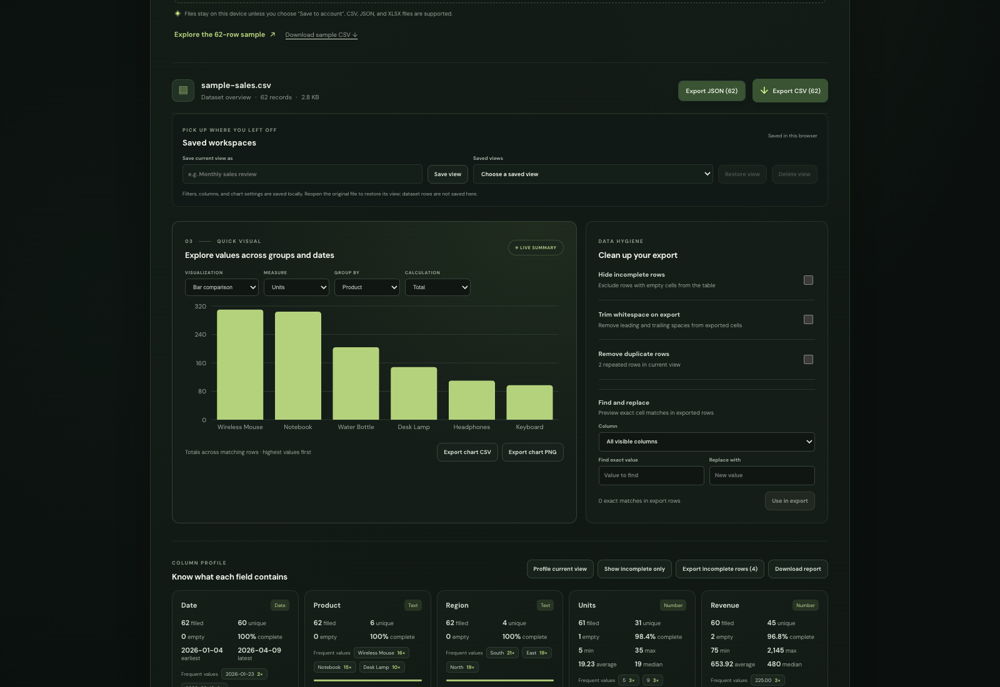
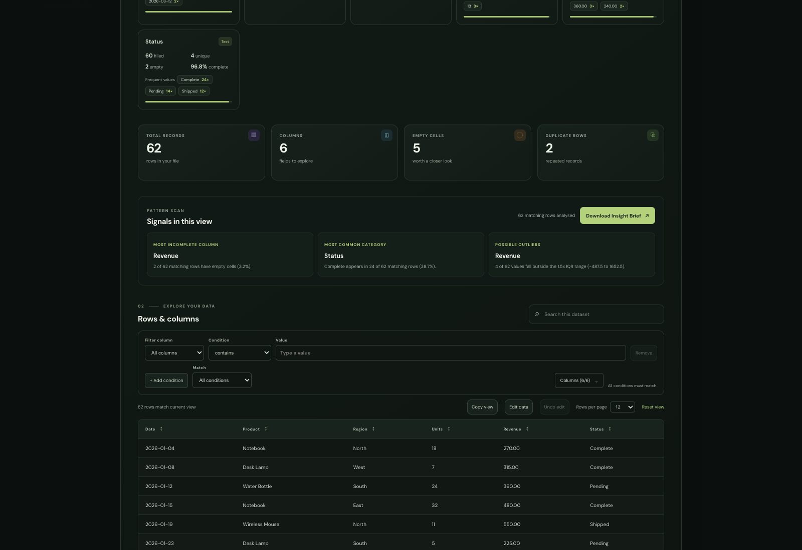

A simple report to help me explain what I built, how it looks, and how it helps people understand their data.
In one sentence: I helped build InsightX into a tool where people can explore data, check for problems, spot patterns, and share what they learn. I also worked on its dark green theme.
InsightX is a browser-based data workspace. A user opens a CSV, JSON, or Excel file, then explores its rows and columns. They can narrow the view, check for missing or repeated values, compare numbers, and export a useful result.
Search, sorting, filters, page controls, and column selection help people find the rows they need. Users can also edit cells before exporting.
Column profiles summarize missing and filled cells, completeness, distinct and frequent values, plus numeric or date ranges.
Charts and simple signals help people notice comparisons or possible outliers. Exports include cleaned data, analysis reports, chart files, and the printable Insight Brief.
I worked on the dark forest green theme and improved parts of the screen so the app feels consistent and easier to use. I also worked on loading messages, error handling, navigation, documentation, and the first account screens.
A person can ask questions such as “Which region had higher sales?” or “Which column has missing information?” and inspect the answer without writing code or scanning every row manually.
This screenshot shows the current application with its built-in 62-row sales sample open. It contains product, region, date, units, revenue, and status fields.

The sample contains product, region, date, units, revenue, and status. The controls above the chart let a user choose what to compare and how to group it.
The sales values are an example dataset for demonstrating the interface; they are not a claim about real business results.
The lower part of the workspace connects the summary to the actual records. Filters can narrow the rows; the overview, profiles, and chart then help explain the selected view.

A filter is a condition applied to rows. For example, “Region is West” keeps matching rows. More than one condition can be combined: Match all means every rule must match; Match any means at least one must match. Filtering changes the current view, not the original file.
For each column, the app counts filled and empty cells, estimates completeness, counts different values, and summarizes numeric or date values. The profile can describe either the whole dataset or the rows currently shown.
A chart can compare a numeric measure by category, such as revenue by product, using a total or average. Date charts can group by day, month, or year. The chart follows the current filtered rows.
The app can point out a column with many missing values, a common category, or a possible numeric outlier. An outlier is a statistical flag for human review, not proof that the value is wrong.
The printable brief summarizes counts, signals, active filters, chart information, and column quality. It is made in the browser and leaves out the source data rows, so the reader can understand the analysis without receiving the whole dataset.
The repository history and the supplied presentation guide show contributions under the Git author name damnsunnyy. Commit history helps identify the work associated with that account; it does not prove who typed every line or capture every informal contribution.
This wording is intentionally based on commit authorship and the presentation guide. If your instructor uses a different contribution record, follow that record.
The theme makes the app comfortable to use. Filters help find the right rows. Charts and reports make the results easier to understand.
In the browser. Saving a dataset to an account is an explicit action that sends it to the backend.
No. It is a value that is unusually far from the others by a common statistical rule. A person should check its context.
The whole file may look complete while one selected group has missing values. The two views help reveal that difference.
A printable summary of the current analysis: counts, signals, filters, chart summary, and column quality. It does not include the raw dataset rows.
“I would try the workflow with more kinds of datasets and users, then improve any confusing steps they find.”
“I worked on the dark forest theme, data exploration features, reports, interface improvements, documentation, and the first account features. The full application is shared team work.”